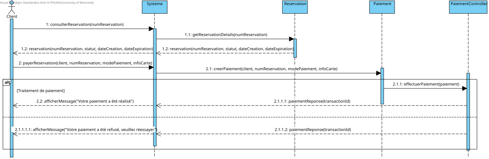
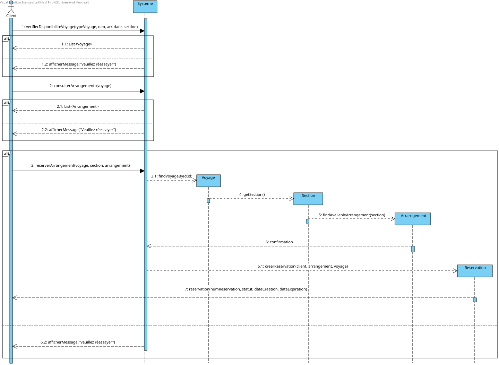
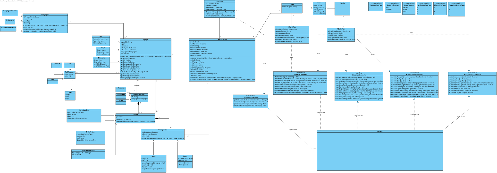
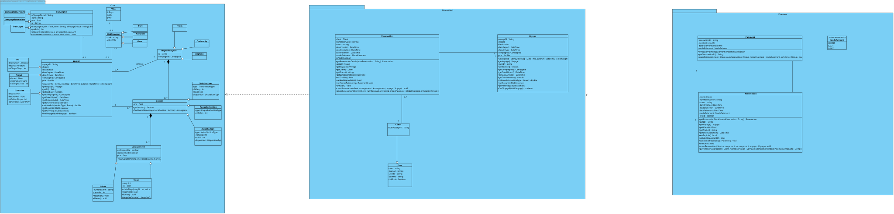
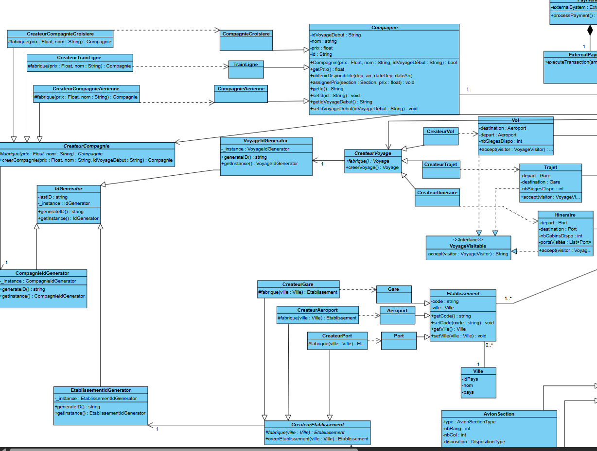
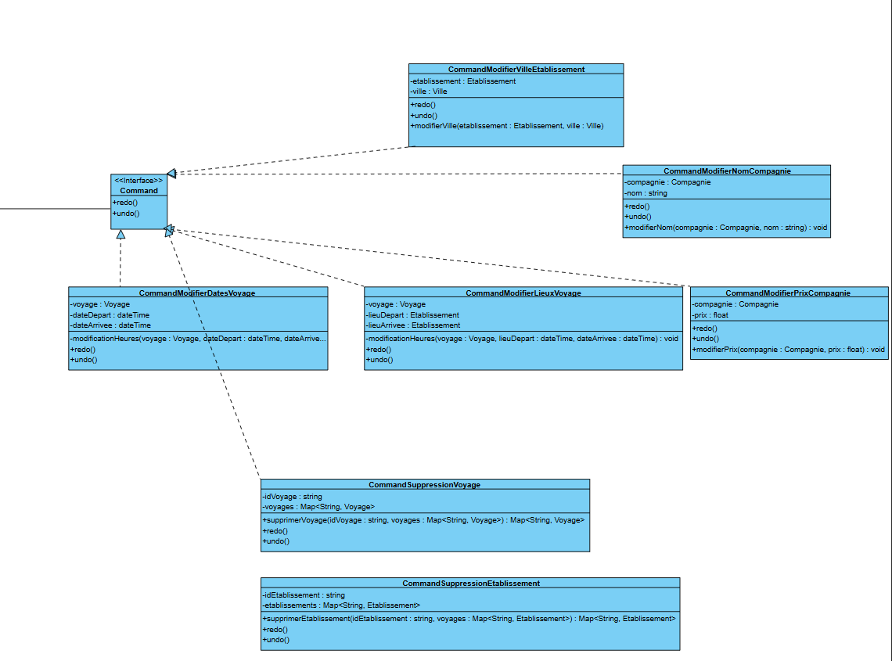
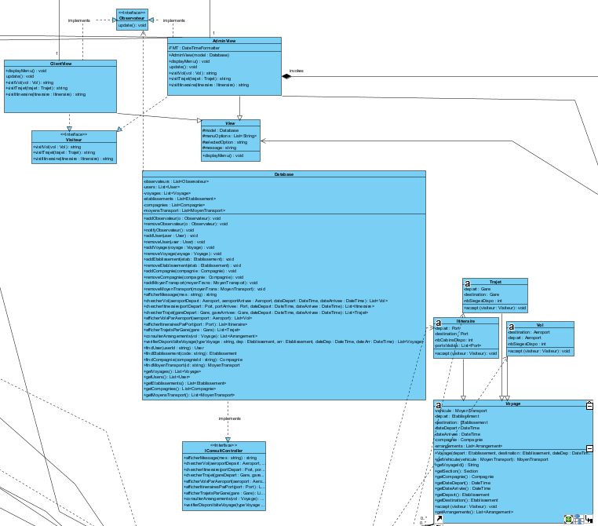
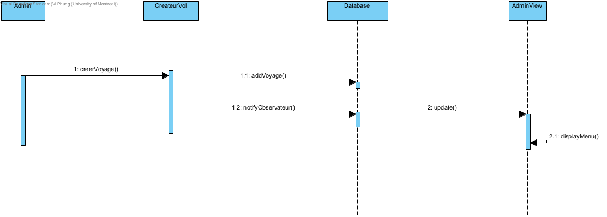
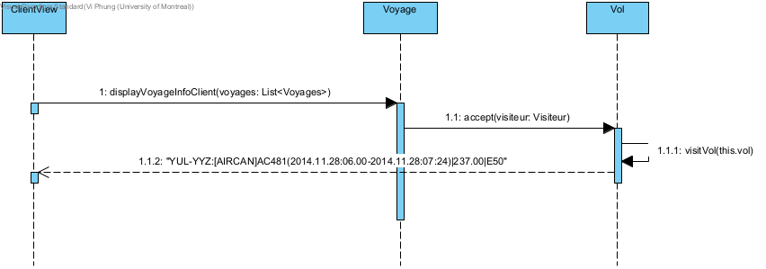

Par Vi
Diagramme de séquence Paiement Reservation

Réservation arrangement
Par Rachida

Vérifier voyages (vols,trajets,itinéraires)
Par Athavan
.svg)
Nom:
Athavan Pathmanathan
Matricule:
20181966
Courriel:
athavan.pathmanathan@umontreal.ca
temps mis:
25 heures
Nom:
Rachida Toumi
Matricule:
20171874
Courriel:
rachida.toumi@umontreal.ca
temps mis:
25 heures
Nom:
Le Kinh Vi Phung
Matricule:
20178538
Courriel:
le.kinh.vi.phung@umontreal.ca
temps mis:
25 heures
Soumetteur: Athavan Pathmanathan
| Tâche | Athavan | Rachida | Vi |
|---|---|---|---|
| Patron de fabrique | (100%) | (0%) | (0%) |
| Patron du Singleton | (100%) | (0%) | (0%) |
| Patron de commande | (100%) | (0%) | (0%) |
| Patron d'État | (0%) | (100%) | (0%) |
| Patron de l'observateur | (0%) | (0%) | (100%) |
| Patron du visiteur | (0%) | (0%) | (100%) |
| Patron de l'adaptateur | (0%) | (100%) | (0%) |
| Patron du décorateur | (0%) | (100%) | (0%) |
| Codage | (33%) | (33%) | (33%) |

Par Vi

Par Rachida

Par Athavan


Situé dans le côté gauche du diagramme de classe.


Nous avons utilisé la variante Méthode de fabrication. Car nous n'avons pas de combinaisons de familles pour les entités de base dans notre application.
En regardant l'exemple présenté sur le diagramme de séquence ci-dessus, on voit que le Produit est une compagnie, le Produit Concret est une compagnie Aérienne. Le créateur est CreateurCompagnie et le créateur concret CreateurCompagnieAerienne. On a la ligne de Train et la compagnie de Croisière comme unités conrètes qui suivent la même idée.
Le patron de fabrique est aussi utilisée pareillement pour les moyens de transport et les voyages.
En procédant de cette manière, on encapsule le processus de création de chaque élément et on la délègue uniquement à la fabrique.
Vue que c'est la responsabilité de chaque fabrique de créer une nouvelle entité (Moyen de transport, Compagnie, Voyage), il est plus facile de lui intégrer un générateur de id suivant le patron du singleton. On s'assure que chaque id est généré selon la spécification pour chaque unité.
Situé dans le côté droit du diagramme de classe.


On a appliqué le Patron de commande pour les tâches de modification et de suppression de chaque type d'entité. La variante utilisée est le Undo-Redo qui permet de nous assurer de pouvoir revenir en arrière et de pouvoir annuler une opération effectuée.
Vue que c'est seulement un Administrateur qui peut effectuer ses tâches, c'est le AdminView qui est l'invoquateur de ses commandes.
Situé dans le côté droite/milieu du diagramme de classe.



Nous avons implémenté le patron Observateur pour découpler le modèle de données
(Database) des vues (AdminView et ClientView).
Chaque vue s’inscrit comme observateur auprès du modèle et réagit automatiquement
à toute modification des données (ajout ou suppression de voyages, utilisateurs, etc.).
Cette architecture garantit la cohérence en temps réel entre différents points d’accès
(administratif et client) et facilite l’extension future : il suffit d’ajouter un nouvel
observateur pour propager les changements, sans modifier la logique du modèle.
En implémentant addObservateur, removeObservateur et
notifyObservateurs dans Database, nous respectons
le principe de responsabilité unique (SRP) pour le modèle, tandis que chaque vue
implémente uniquement la méthode update() pour se redessiner lorsqu’elle
est notifiée. Cette isolation améliore la maintenabilité et la testabilité de l’ensemble.
Le patron Visiteur a été appliqué pour séparer la logique de présentation
des entités de voyage (Vol, Trajet, Itineraire)
de leur structure métier. Chaque sous‑classe de Voyage implémente
la méthode accept(Visiteur), et les deux implémentations de
Visiteur (AdminView et ClientView) fournissent
leur propre algorithme de formatage.
Nous avons intégré Le patron de conception d'état au système de réservation pour gérer les différents états d’un Siege (Libre, Réservé, Occupé) rendant ainsi la gestion des états d’un siège plus flexible et maintenable. .Encapsulation de la logique par état : Chaque état (libre, réservé, occupé) a son propre comportement pour les opérations, rendant le code plus modulaire et plus facile à maintenir. .Gestion des transitions d’état : Le patron d’état permet de gérer dynamiquement les transitions entre états (par exemple, Libre → Réservé, Réservé → Occupé) de manière claire et contrôlée. .Évolutivité : Ajouter un nouvel au futur sans modifier la classe Siege, en créant une nouvelle classe concrète qui hérite de l’interface SiegeEtat. .Réduction des conditions complexes : Sans le patron, la classe Siege aurait besoin de multiples conditions (if-else) pour gérer les comportements selon l’état, ce qui rendrait le code complexe et sujet aux erreurs
Le Décorateur est utilisé pour ajouter dynamiquement des fonctionnalités ou services supplémentaires à une réservation (comme un service de repas ou une assurance voyage) sans modifier la classe Reservation. .Cela permet une extensibilité : on peut ajouter de nouveaux services (décorateurs) sans toucher au code existant, respect du principe OCP. .Le coût total d'une réservation peut être calculé en ajoutant les coûts des services décorés (getCost()), ce qui offre une flexibilité pour personnaliser les réservations.
L'Adaptateur (PaymentAdapter) permet à la Reservation d'interagir avec un système de paiement externe (ExternalPaymentSystem) via une interface standardisée (InterfaceAdapter). .Il traduit les appels de processPayment() (utilisé par le système interne) en appels compatibles avec executeTransaction() (utilisé par le système externe). .Cela garantit une séparation des responsabilités et permet à la Reservation de traiter les paiements sans dépendre directement de l'implémentation de l'ExternalPaymentSystem, rendant le système plus modulaire et interoperable